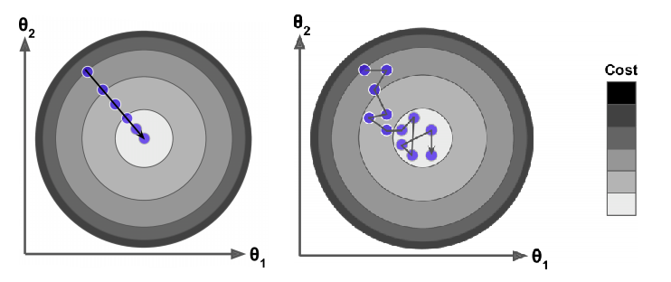

线性回归¶
《Hands-on Machine Learning with Scikit-Learn, Keras & TensorFlow》 - 第二版 第四章，《Python数据手册》 - Jake VanderPlas 第五章，《机器学习》 - 周志华第三章的读书笔记，本文中的所有代码可在GitHub仓库中找到
数学模型¶
线性模型试图学得一个通过属性的线性组合来进行预测的函数，即：
一般用向量形式写成：
其中，
- \(\hat{y}\) 表示预测结果
- \(n\) 表示特征的个数
- \(x_i\) 表示第 \(i\) 个特征的值
- \(\theta_j\) 表示第 \(j\) 个参数(包括偏置项 \(\theta_0\) 和特征权重值 \(\theta_1, \theta_2, ...\theta_n\) )
正规方程求解¶
我们可以采用公式解，通过正规方程直接得到 \(\theta\) 的值。正规方程如下：
其中，
- \(\hat{\theta}\) 指最小化损失 \(\theta\) 的值
- \(y\) 是一个向量，其包含了 \(y^{(1)}\) 到 \(y^{(m)}\) 的值
例子“normal_equation.ipynb”展示了如何利用方程直接求解线性回归方程，并和sklearn提供的LinearRegression模型进行了对比，两者结果相近。
梯度下降求解¶
当特征个数较大时，正规方程求解较慢。梯度下降是一种非常通用的优化算法。其整体思路是通过迭代来逐渐调整参数使得损失函数达到最小值。
批量梯度下降¶
线性回归模型的损失函数采用均方误差MSE(mean square error)：
梯度下降需要求损失函数的偏导数：
对所有 \(\theta\) 都计算偏导数，可以用矩阵运算，得到梯度向量：
梯度向量是 \(\theta\) 每次变化的步长，通过学习率 \(\eta\) 控制 \(\theta\) 的变化速度，得到 \(\theta\) 的迭代公式：
梯度向量的计算包含了整个训练集 \(X\)，因此这个算法称为批量梯度下降。
例子“gradient_descent.ipynb”中“批量梯度下降”相关章节，分别选择了“0.02, 0.1, 0.5”三种学习率，观察每次迭代的变化情况，其结果如下图：

- 左侧图的学习率太小了，花了大量时间也没能求出最后的结果
- 中间图的学习率最合适，迭代几次后就收敛了
- 右侧图的学习率太大了，算法是发散的
随机梯度下降¶
批量梯度下降每一步都要使用整个训练集，这导致在规模较大的数据集上，其速度会非常慢。而随机梯度下降，在每一步的梯度计算上只随机选取训练集中的一个样本，这一每次操作数据量会非常小，从而提高了速度。
但是，由于随机梯度下降每次迭代的随机性，其呈现出更多的不规律性：它到达最小值不是平缓地下降，损失函数会忽高忽低，只是在大体上呈下降趋势。随着时间的推移，它会非常靠近最小值，但是不会停在一个值上，而是一直在这个值附件摆动。下图对比了梯度下降(左图)和随机梯度下降(右图)的迭代路径。

虽然随机性可以很好地跳过局部最优值(损失函数不规则)，但同时它却不能达到最小值(在附件摆动)。解决办法是逐渐降低学习率。开始时，走的每一步较大(有助于跳过局部最小值)，然后学习率变得越来越小，从而使算法达到局部最小值。
例子“gradient_descent.ipynb”中“随机梯度下降”章节，实现了随机梯度下降算法，其中learning_schedule决定了每次迭代的学习率函数，迭代次数越大，其值越小。
小批量梯度下降¶
在迭代的每一步，批量梯度使用整个训练集，随机梯度仅仅使用一个实例。但是，在小批量梯度下降中，它使用一个随机的小型实例集。它比随机梯度的主要优点在于你可以通过矩阵运算的硬件优化得到一个较好的训练表现，尤其当你使用GPU进行运算的时候。
例子“gradient_descent.ipynb”中“小批量梯度下降”章节，实现了这一算法。
总结¶
下表比较了线性回归的不同算法：
| Algorithm | Large m | Out-of-core support | Large n | Hyper-params | Scaling required | Scikit-Learn |
|---|---|---|---|---|---|---|
| Normal Equation | Fast | No | Slow | 0 | No | LinearRegression |
| Batch GD | Slow | No | Fast | 2 | Yes | N/A |
| Stochastic GD | Fast | Yes | Fast | >=2 | Yes | SGDRegressor |
| Mini-batch GD | Fast | Yes | Fast | >=2 | Yes | N/A |
其中，m表示样本数，n表示特征数。例子“sklearn_reg.ipynb”利用了sklear提供的回归模型进行了相关实验。
下图显示了训练期间三种梯度下降算法在参数空间中所采用的路径。它们都接近最小值，但批量梯度的路径最后停在了最小值，而随机梯度和小批量梯度最后都在最小值附件摆动，其相关代码可参考例子“gradient_descent.ipynb”中的最后一部分总结。

多项式回归¶
如果训练数据不是线性的，也可以通过特征扩展，利用线性回归模型进行预测。
sklearn提供了PolynomialFeatures类进行训练数据集的转换。例如，如果有两个特征 \(a, b\)，使用3阶(degree=3)的PolynomialFeatures，不仅会产生 \(a^2,a^3,b^2,b^3\)，还会产生其他组合 \(ab, a^2b, ab^2\)。
完成对训练数据集的转换后，就可以通过LinearRegression进行线性预测了。例子“polynomial_reg.ipynb”对非线性数据(二次多项式)，通过线性模型进行了预测。
线性模型的正则化¶
降低模型的过拟合的好方法是正则化这个模型，即限制模型(模型自由度越少，就越难以拟合数据)。正则化一个多项式模型，可减少多项式的阶数。正则化一个线性模型，可约束模型中参数的权重，有三种不同的约束权重的方法：
- Ridge回归
- Lasso回归
- Elastic Net
岭(Ridge)回归¶
岭回归是线性回归的正则化版本，其在损失函数上直接加上一个正则项：
这使得学习算法不仅能够拟合数据，而且能够使模型的参数权重尽量的小。
岭回归的损失函数是：
Lasso回归¶
Lasso回归和岭回归一样，也在损失函数上添加了一个正则化项，但是它使用权重向量的 $ \ell^1 $ 范数，而不是去那种向量$ \ell^2 $ 范数平方的一半。
Lasso回归的损失函数是：
弹性网络(ElasticNet)¶
弹性网络介于Ridge回归和Lasso回归之间。它的正则项是Ridge回归和Lasso回归正则项的简单混合，同时你可以控制他们的混合率 \(r\)。当 \(r=0\) 时，弹性网络就是Ridge回归；当 \(r=1\) 时，就是Lasso回归。
弹性网络损失函数是：
总结¶
我们应该如何选择线性回归，岭回归，Lasso回归或者弹性网络呢？
一般来说，有一点正则项的表现更好，因此通常应该避免使用简单的线性回归。岭回归是一个很好的首选项，但是如果你的特征仅有少数是真正有用的，应该选择Lasso回归或弹性网络。因为，他们能将无用特征的权重降为零。
例子“regularized_linear_models.ipynb”对三种线性模型的正则化方法进行了对比。